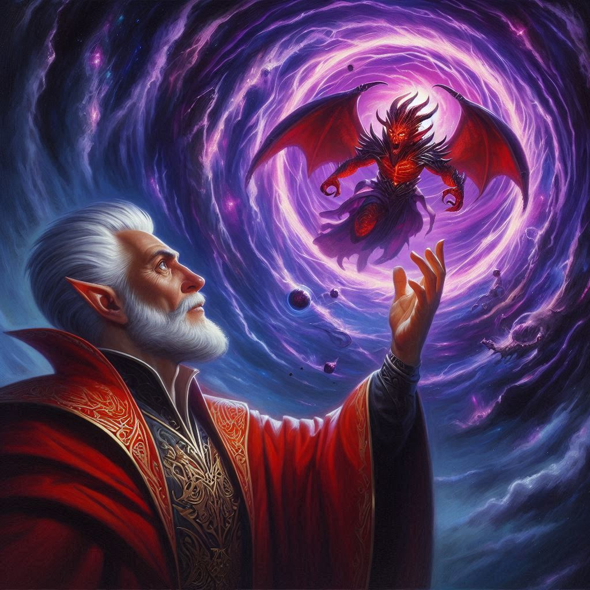
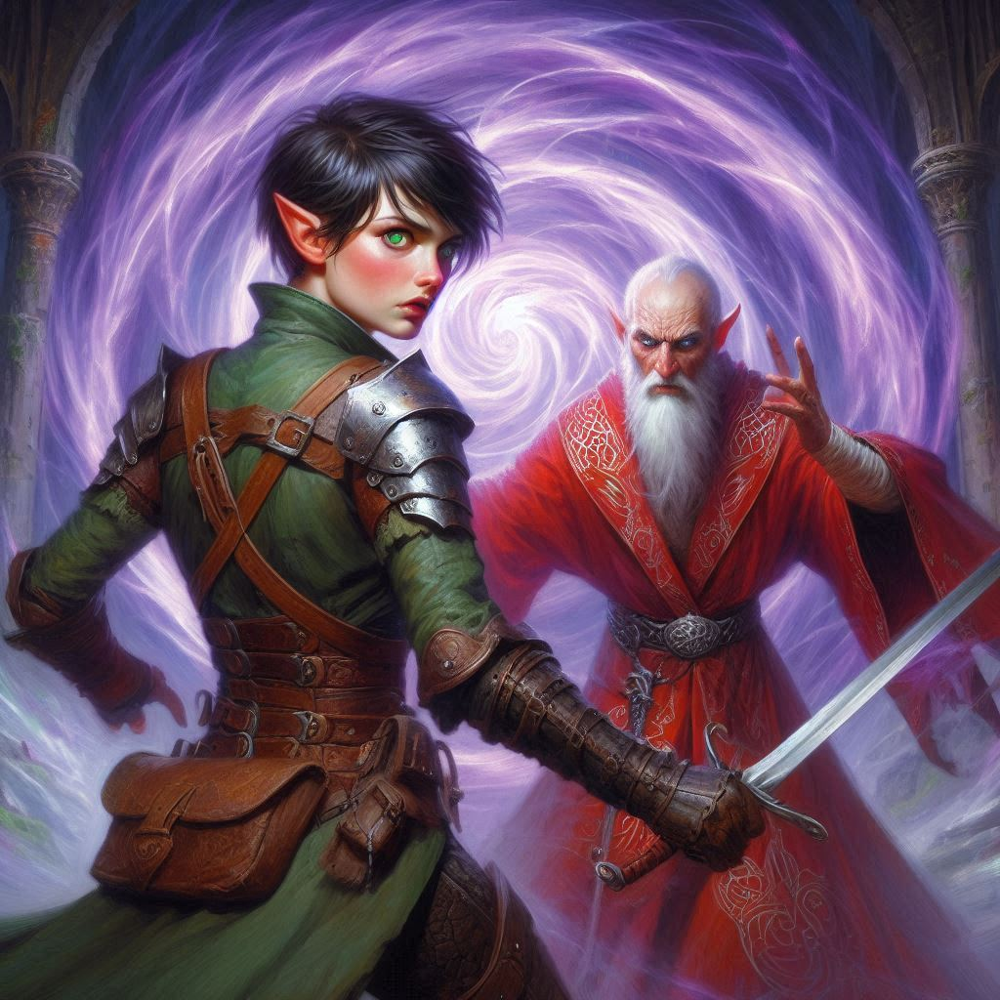
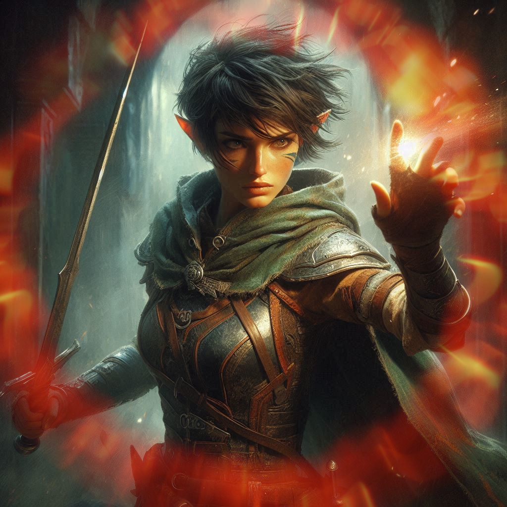
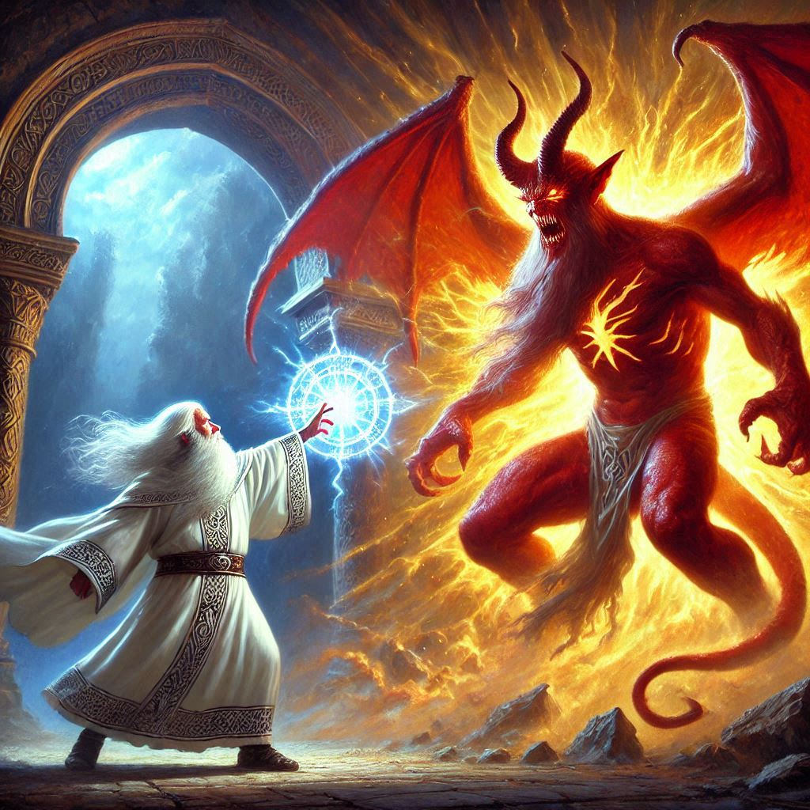

The Heart of Shadows
“I choose Jorsh,” you whisper, and the words taste like both betrayal and salvation.
His eyes—those same mischievous gray eyes from your youth—glint with something unreadable. Not quite joy. Not quite sorrow. Just a deep, quiet recognition. You’ve missed that gaze more than you’d ever admit.
Then, with a sharp flick of his wrist, Jorsh casts a glowing sphere of blue magic. It hurtles toward Princess Hawthorn like a comet. She raises her hands, trying to shield herself, but the spell blossoms around her, encasing her in a luminous cocoon. Her scream never leaves her lips. Frozen, suspended in the air, she drifts slowly upward, her eyes wide, her form carried into the veil between realms.
Elias breathes the words you cannot. “What’s going to happen to the princess?”
“She’ll live,” Jorsh replies calmly. “The spell is temporary. She’ll awaken far from here, safe… eventually. We don’t have time to argue morality. The real enemy is still ahead.”
“Then what’s the plan?” Baider growls.
“That depends,” he says, looking into your eyes.
“On what?” Elias asks, looking at you with a raised eyebrow as if you have the answer.
“On whether or not Kira still loves me,” Jorsh says, his unwavering gaze drilling into your soul.
You scoff. “I wouldn’t get my hopes up if I were you.” You narrow your eyes dangerously at Jorsh, but your heart flutters painfully when he returns your frown with a boyish smile.
“Grab my cloak,” Jorsh says, raising his hands. “We’re going to Umbr’Thal. We stop Varis, or the world ends.”
You barely have time to think before you reach out, fingers closing around the fabric of his robes. The spell snaps into place like a slingshot loosing its charge. Your breath catches as reality implodes. Pressure crushes your skull, your stomach churns, your lungs scream—and then…
Silence.
You stumble forward into shadow.
The Temple of Umbr’Thal is a cathedral of nightmares. Obsidian walls curve in unnatural angles, glowing faintly with veins of violet light. The air is choked with the scent of brimstone and rot. An altar looms ahead, carved from bone-white stone and stained with old blood. On it lies Onyx—chained, battered, breathing, but barely. His eyes find yours and narrow in warning.
And standing above him—cloaked in tendrils of living darkness—is Varis.
His voice is like smoke. “You’re too late.”
You draw your blade.
Baider readies his warhammer. Elias strings a silver-tipped arrow. And beside you, Jorsh tightens his fingers around a sigil etched in silver and bone.
“We stop the ritual,” Jorsh says. “Or the world burns.”
Then everything explodes into motion.
Varis raises both hands and launches volleys of shadow magic. Jorsh deflects them with a shimmering barrier, pushing forward. Baider roars and hurls himself at the altar, his hammer sparking against the forcefield surrounding it. Elias looses his arrow—it punches through the shadows and buries itself in Varis’s shoulder. The dark elf snarls, staggers… and shatters a black crystal orb at his feet.
The rift opens in the air like a wound in the world.
From its depths emerges Yaldaboath.
The demon is vast, a mountain of clawed limbs and molten flesh. Its horns scrape the ceiling. Its eyes burn with centuries of hunger. When it speaks, the walls tremble.
“WHO DARES?”
Terror spikes through your gut, but you hold your ground.
“I’ll deal with him!” Jorsh shouts. “Get Onyx free!”
Before you can protest, Jorsh charges the demon, conjuring a blazing cyclone of fire and light. His magic clashes with Yaldaboath’s fury in a storm of chaos. Lightning forks. Flames roar. The temple quakes.
You don’t hesitate. You sprint toward the altar. Varis appears in your path like a specter, blades drawn. He strikes, and your sword meets his with a screech of steel.
“You are a deluded half-elf girl, poisoned by your human blood,” he hisses. “Love has made you weak.”
“You know nothing,” you growl, driving him back with a flurry of strikes. “Love is what gives me the power to die here today with no regrets!”
Your arms ache. Your lungs burn. You see Baider breaking the chains that bind Onyx while Elias fends off Varis’s summoned shadows.
But behind you—Jorsh falters.
Yaldaboath slams him with a molten fist. Jorsh crashes to the ground, barely conscious. The demon raises another hand, conjuring a sphere of flame—aimed straight for him.
You don’t think.
You move.
Throwing yourself between Jorsh and the oncoming blast, you raise your hands—but it’s not enough.
The fireball strikes.
And… dissipates.
You blink.
A radiant aura surrounds you—white-gold light surging from your chest like sunlight breaking through storm clouds. Warmth floods your limbs. The temple shudders as Yaldaboath recoils, howling in fury.
“Kira…” Jorsh whispers, awe-struck. “You are the one with the key to stopping Yaldaboath...”
And then you understand.
Not fear. Not failure. But love—pure and true—is your power.
The light pulses outward. Onyx, now free, lifts a glowing amulet. His voice booms with ancient resonance, echoing in a forgotten tongue. The light bends, focuses, then erupts in a blinding spear straight into the heart of Yaldaboath.
The demon shrieks, its form unraveling into ash and shadow. The rift slams shut. The temple begins to collapse.
Varis snarls and vanishes into the gloom with a hiss, slipping through cracks in reality like a coward. You search frantically for Onyx—but he is gone. No body. No trace. Only the amulet remains, lying where he stood.
“Run!” Baider bellows, grabbing Elias and hauling him toward the exit.
Jorsh grabs your hand. Together, you leap through the portal he casts at the last possible second—just as the world behind you crumbles into dust.
You tumble through light and land hard on the cold floor of Hemlock Caverns. Stone and silence surround you.
It’s over.
You made it.
Elias is breathing. Baider’s still on his feet. And Jorsh… Jorsh reaches out and gently takes your hand.
“We did it,” he says. “Together.”
You stare at the glowing embers where the portal once shimmered. The Realm of Shadows is sealed. The demon is banished. The dark elf king—at least for now—is thwarted.
But Onyx is gone.
The silence settles between you like falling snow. Heavy. Beautiful. Sad.
You lean back against the cavern wall, breathless. Exhausted. Alive.
For the first time, you let yourself feel the weight of it all. The loss. The love. The strength it took to survive.
And you realize: this wasn’t just a battle to save the realm.
It was a battle to save yourself.
And maybe, just maybe… you’ve won.